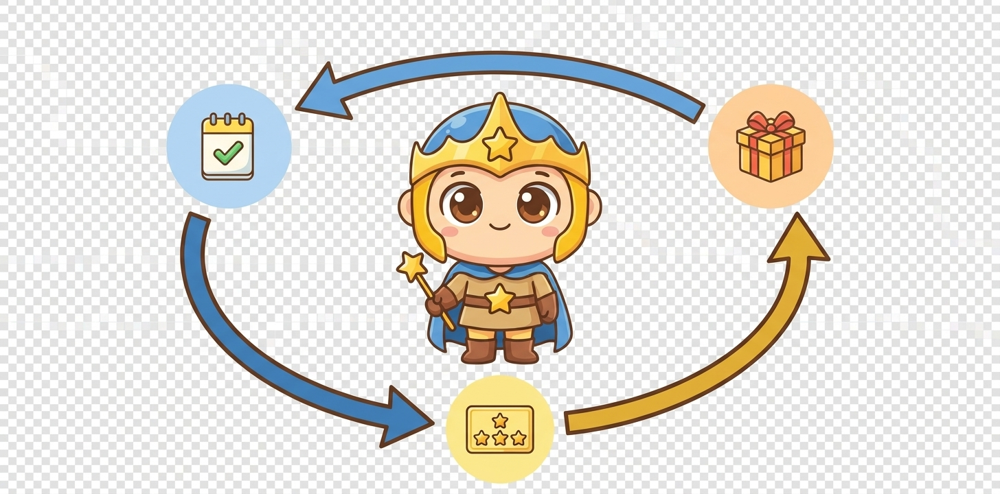

「やりなさい」を 「やりたい！」 に変える家族の冒険アプリ
3〜18 歳の毎日の習慣を、ゲームのように楽しめる仕組みに変える。声をかけなくても、自分から動きだす家族時間へ。
基本無料・必要なら 月 ¥500〜・有料は 7 日間無料・いつでも解約
- 無料体験中もカード情報は不要。有料プラン切替時に初めて入力します
- 広告なし
- いつでも解約できます（契約期間の縛りなし）
家族何人でも無料ではじめられます
- 3〜18 歳 対応
- 300+ プリセット活動 の候補
- 約 5 分 で初期設定


シール帳・ホワイトボードではできない 4 つのこと
多くのご家庭がまず紙で試して、続かずに諦めています。「3 歳から 18 歳まで」「家族みんなで」「ずっと続ける」を叶えるのが、がんばりクエストです。
集計が手作業で計算ミスが起きがち
自動集計でいつでもポイントが見える
「あと 50 ポイントでごほうび」を子供自身が計画

年齢が変わるたびに冊子を買い替え
3 歳から 18 歳まで同じアプリで継続
15 年分の成長履歴がひとつに

家を離れると続けられない
旅行先・祖父母宅でも続けられる
スマホ・タブレットで連続記録が途切れない

続けることが目的になりがち
子供が自分から動きだしたらアプリは不要
「使わなくなる」が成功のゴール — 卒業を最終地点として設計

お子さまの年齢で、画面とむずかしさが変わります
3 歳から 18 歳まで、2 つの UI モードが対応。タップで「今のお子さまに合う UI」をご覧ください。
0-2 歳のお子さまは「準備モード」でご登録いただけます。詳しくはこちら

ひらがな中心・丸みのある大きなボタン
幼児 UI: ひらがな / 大タップ / 絵文字演出「はをみがく」「おかたづけ」など、幼児期に身につけたい習慣の候補が 300 件以上用意されています。最初の準備で好きなものを選ぶだけ。毎日のごほうびでおみくじが 1 回引けて、週 5 日タップでスタンプカード 1 枚分のポイントに自動交換できます。
- 大きなタップ領域 (80px) で押しやすい
- ひらがな表示で読みやすい
- 300+ プリセット活動からタップで選ぶだけ

漢字 + 情報密度で 15 年継続できる UI
小学生以降 UI: 漢字 / 情報密度 / 学年別プリセット宿題・習い事・部活・受験まで、学年が上がるにつれて情報密度が増す設計。ポイント履歴とウィークリーチャレンジで「次は何をやろう？」と子供自身が計画を立て、3 歳から 18 歳まで 15 年間、同じアプリで成長を記録できます。
- 漢字 + 情報密度で 15 年継続できる UI
- 学年別プリセット (宿題 / 部活 / 受験) 対応
- ポイント履歴で子供自身が次の計画を立てる
👶 0〜2 歳のお子さまは「準備モード」でご登録いただけます — デモを見る
3 つの仕組みで、毎日のがんばりが本物の報酬になる
毎日「歯みがいた？」「宿題は？」と繰り返し声をかけるのは、親も子も疲れます。活動 → 習慣 → ごほうびの 3 つの仕組みで、子供が自分から動きだす毎日へ。

毎日の活動を記録
「はみがきした」「宿題おわった」を 2 タップで記録。学年別に用意された候補から、家庭で必要なものを選んで設定できます。
習慣カードで続ける
毎日 1 回引けるおみくじスタンプで、子供が「明日もやろう」と自分から続けたくなります。
ごほうびショップで交換
貯めたポイントはごほうびショップが唯一の出口。実物のプレゼント・お小遣い・特権を親が設定し、子供が自分で選んで交換できます。
毎日の冒険をもっと楽しくする 2 つの工夫
朝の持ち物確認と、夜のボスバトル。子供が朝から夜まで「次のごほうび」を楽しみに待てるしかけです。
持ち物チェックリスト
通学や習い事の持ち物を、子ども自身がタップ確認。
朝の「あれ持った？」を減らします。

ボスバトル
毎日の努力で貯めたエネルギーで、ボスに挑戦。小学生から全年齢で使える冒険の締めくくり。

家庭で起きること: 1 日の努力が「バトルで使えるエネルギー」として可視化される
親が安心できる運用補助
冒険の裏で、親がちゃんと伴走できる仕組み。「遊ばせっぱなし」「うちの子に合わなさそう」の不安をなくし、ご家庭に合わせて自由にカスタマイズできます。
成長の記録（月次レポート）
月次レポートで活動・ポイント推移をひと目で把握。子供の成長を記録として残せます。

家庭で楽になること: 1 ヶ月の頑張り合計と前月比が一目でわかる
家庭に寄り添う運用補助
設定時間で画面が自動で閉じる使いすぎ防止タイマーで長時間利用を防止。必要な時だけ家族からおうえんメッセージを子供のホームへ届けられます。

家庭ごとにカスタマイズできること: 設定時間で使いすぎ防止タイマーが働き、おうえんメッセージは子供が読むと既読が付く
設定の自由度
ご家庭ごとに自由なカスタマイズ。活動の種類・ポイント配分・ごほうびを、お子さまに合わせて細かく調整できます。

家庭で楽になること: 子供の年齢・興味に合わせて活動とポイント配分を細かく調整できる
3 歳から 18 歳まで、そして「卒業」へ
お子さまの成長に合わせて UI と機能が変化。最後は「アプリを使わなくても自分で計画できる」子育てステージへ。
まずは無料、必要なら月 ¥500〜
家族みんなで基本無料で使えます。家族構成や使い方に合わせて、必要なら月 ¥500〜の有料プランも選べます。安心して始められる 4 つのお約束。
お子さまのデータは、家族だけのものです
広告なし・家族だけで閉じた空間・データは家族の手元に。「こっそり外に持ち出される」「勝手に操作される」不安をゼロにする 4 つの約束。
データを家族の手元に
家族のデータが第三者にも使われない設計です。サービス停止時は事前にお知らせ + データの書き出しができます。お子さまの記録は確実に手元に残せます。
（技術に詳しい方は）ご自宅で同じアプリを動かす方法もあります。詳しくはこちら →
サービス利用に関する重要なご案内 本サービスは個人開発のため、利用規約にて賠償上限を定めております。詳しくは利用規約・FAQ をご確認ください。 [利用規約 第 12 条 / FAQ]
よくあるご質問
特に重要なよくあるご質問。 その他のご質問はこちら
子供が自分から使ってくれるようになりますか？
多くの保護者から「ガミガミ言わなくても、子供から見せに来るようになった」とのお声をいただいています。ただし、最初の 1 週間は親子で一緒に楽しむ時間を取ることをおすすめします。
無料トライアルにクレジットカードは必要ですか？
不要です。メール認証だけで 7 日間すべての有料機能をお試しいただけます。期間終了時は自動で無料プランに戻るため、気付いたら課金されていたということはありません。
子供が勝手に課金してしまう心配はありませんか？
ありません。課金操作は保護者権限のアカウントからのみ実行できる設計です。お子さまアカウントにはプラン変更ボタン自体が表示されません。詳しくはこちら
サービスが終了したらデータはどうなりますか？
終了日の 30 日以上前に登録メールアドレスへお知らせし、その間にデータをエクスポート（JSON / CSV）いただけます。詳しくはこちら